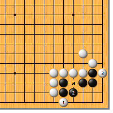
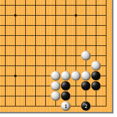
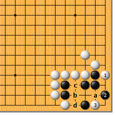
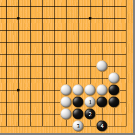
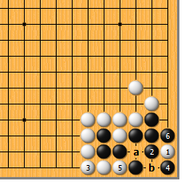
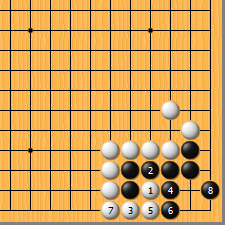

|  |  | |
| 图1 这是实战中常见的形。白1先扳好，黑2如退，白3再扳。虽然a位空了一气，应该可以看出，这是补不活的“勾形”。
| 图2 不过，事情远没有那么简单。白1时，黑2跳补相当顽强，白要杀黑看来颇费周折…… | |
|  | ||
| 图3 白1如打，黑2粘，黑已经活了。接下来，白3总归要粘，黑4先手打一下，再于6位虎，两眼已不成问题，白大失败。 | 图4 其实白1平凡地扳最好。黑2如尖，白3靠是不可错过的急所。而后，黑如a位打，白b位扳即可。黑2如于c位粘，白d位长进去，接下来黑b则白a，黑死。
| |
|  |  | |
图5 白1直接冲也是俗手。黑2挡，白3扳时，黑4虎即活。还要再摆两手吗……
| 图6 白1点最厉害了吧？黑2做眼，白3接时，黑4扑，白5打则黑6提，黑活。黑6不能于a位粘，由于气紧，白可于b位开劫。 | |
|  | 您的高见 | |
图7 白1夹也是俗手。黑2以下至黑8，黑活。此图和图3大同小异。 |